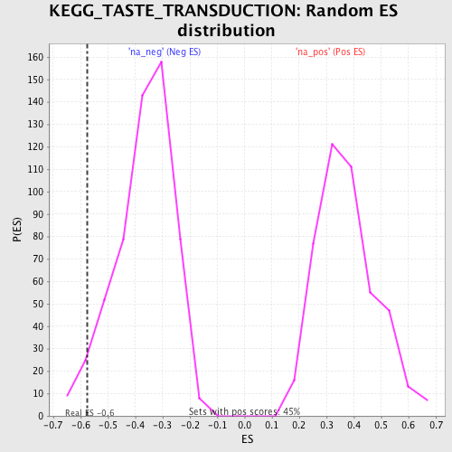

| | | Dataset | GSEA_Acromegaly_prerank |
| Phenotype | NoPhenotypeAvailable |
| Upregulated in class | na_neg |
| GeneSet | KEGG_TASTE_TRANSDUCTION |
| Enrichment Score (ES) | -0.5751784 |
| Normalized Enrichment Score (NES) | -1.5639275 |
| Nominal p-value | 0.039783 |
| FDR q-value | 0.086385205 |
| FWER p-Value | 0.712 |
Table: GSEA Results Summary
 Fig 1: Enrichment plot: KEGG_TASTE_TRANSDUCTION
Fig 1: Enrichment plot: KEGG_TASTE_TRANSDUCTION
Profile of the Running ES Score & Positions of GeneSet Members on the Rank Ordered List
| PROBE | GENE SYMBOL | GENE_TITLE | RANK IN GENE LIST | RANK METRIC SCORE | RUNNING ES | CORE ENRICHMENT | | 1 | ADCY6 | | | 627 | 0.373 | 0.0627 | No |
| 2 | PRKACB | | | 2396 | 0.165 | -0.0198 | No |
| 3 | TAS2R5 | | | 3570 | 0.107 | -0.0752 | No |
| 4 | PRKACA | | | 4259 | 0.078 | -0.1031 | No |
| 5 | PDE1A | | | 5569 | 0.033 | -0.1901 | No |
| 6 | GNAS | | | 5742 | 0.027 | -0.1948 | No |
| 7 | KCNB1 | | | 5817 | 0.025 | -0.1931 | No |
| 8 | TAS1R3 | | | 8875 | -0.080 | -0.3954 | No |
| 9 | CACNA1A | | | 9698 | -0.114 | -0.4227 | No |
| 10 | GNB1 | | | 9816 | -0.120 | -0.3964 | No |
| 11 | PRKX | | | 12239 | -0.289 | -0.4909 | Yes |
| 12 | SCNN1B | | | 12510 | -0.323 | -0.4165 | Yes |
| 13 | ADCY4 | | | 12665 | -0.348 | -0.3261 | Yes |
| 14 | SCNN1A | | | 12851 | -0.380 | -0.2288 | Yes |
| 15 | PLCB2 | | | 13227 | -0.476 | -0.1176 | Yes |
| 16 | ITPR3 | | | 13254 | -0.487 | 0.0227 | Yes |
Table: GSEA details [plain text format]

Fig 2: KEGG_TASTE_TRANSDUCTION: Random ES distribution
Gene set null distribution of ES for KEGG_TASTE_TRANSDUCTION